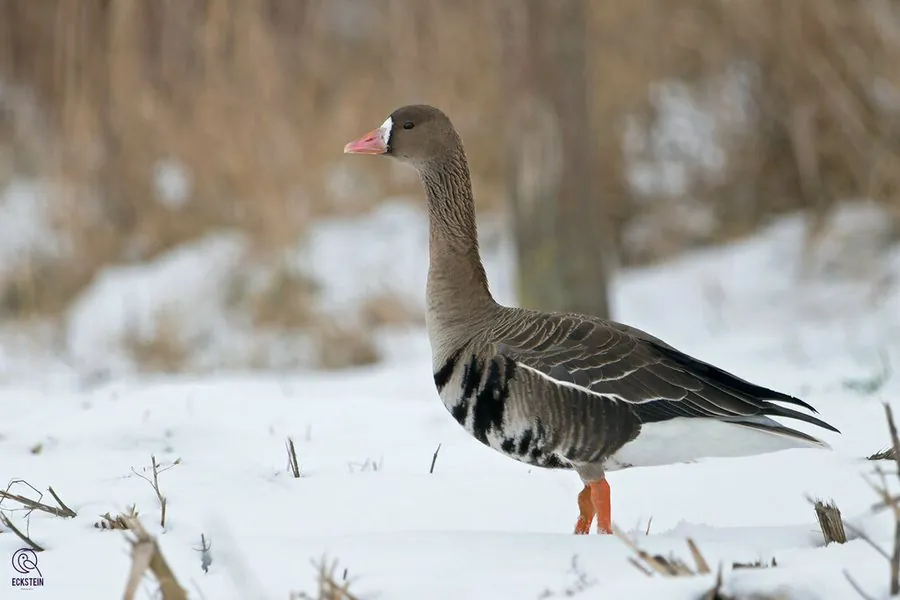

鸟类 · 动物界
白额雁 Anser albifrons

额部有明显白色斑块的雁类，繁殖于北极苔原，冬季成群迁到中国长江流域和沿海农田越冬，是国家二级保护动物。
- 分类
- 门脊索动物门纲鸟纲目雁形目科鸭科属雁属
- 栖息环境
- 北极苔原繁殖，越冬于湖泊、农田和沿海湿地
- 地理分布
- 繁殖于北极苔原和西伯利亚北部，越冬于欧洲、北美和东亚，中国长江流域有越冬
- 保护级别
- IUCN 无危（LC）；中国国家二级保护动物
物种志
白额雁体长 64–78 cm，体重 1.6–3.4 kg。它的体羽呈灰褐色，腹部有黑色横斑，最醒目的特征是额部有一块白色斑块，因此得名；喙粉红色，腿橙黄色。飞行时可见翅膀下方的浅色区域，颈部较长。
白额雁繁殖于北极苔原和西伯利亚北部，冬季南迁到欧洲、北美和东亚的农田、湖泊和沿海湿地，中国长江流域和东南沿海是重要越冬区。它们以草本植物、谷物和水生植物为食，常成群在农田中觅食。繁殖期在苔原地面营巢，每窝产卵 4–6 枚，孵化 25–28 天。由于湿地减少和过度狩猎，白额雁种群受到关注，中国已将其列为国家二级保护动物。
形态与习性
- 食性草本植物、谷物和水生植物
- 体长64–78 cm
- 体重1.6–3.4 kg
- 繁殖每窝 4–6 枚卵，孵化 25–28 天
- 特征额部有一块明显的白色斑块
- 寿命野外约 15 年
趣味知识
- 白额雁的额部有一块白色斑块，是它名字的由来。
- 它们繁殖于北极苔原，冬季成群到中国长江流域和沿海农田越冬。
- 白额雁腹部有黑色横斑，飞行时与灰褐色的身体形成对比。